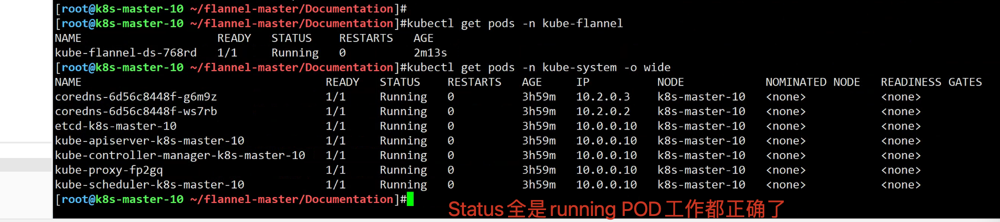
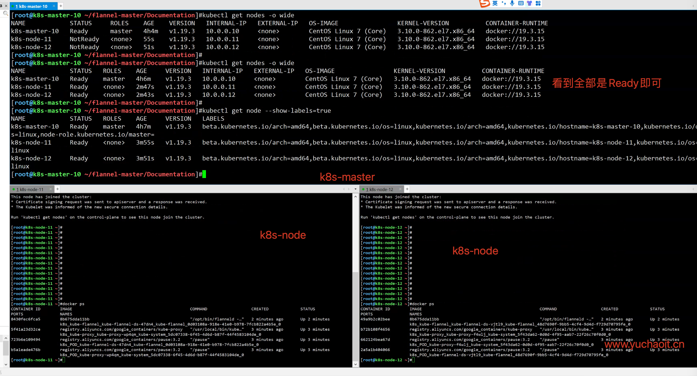

01_kubeadm安装k8s集群
1.机器准备
部署k8s集群的节点按照用途可以划分为如下2类角色：
- master：集群的master节点，集群的初始化节点，基础配置不低于2c 4g
- slave：集群的slave节点，可以多台，基础配置不低于1c 2g
这里教程是基于非高可用版本的k8s集群，高可用是指有多个k8s-master主节点。
主机名、节点ip、部署组件
k8s-master 10.0.0.10 etcd, kube-apiserver, kube-controller-manager, kubectl, kubeadm, kubelet, kube-proxy, flannel
k8s-node1 10.0.0.11 kubectl, kubelet, kube-proxy, flannel,docker
k8s-node2 10.0.0.12 kubectl, kubelet, kube-proxy, flannel,docker
若没主动说明，那就是全节点执行命令。
hosts解析
cat >>/etc/hosts <<'EOF'
10.0.0.10 k8s-master-10
10.0.0.11 k8s-node-11
10.0.0.12 k8s-node-12
EOF
cat /etc/
ping -c 2 k8s-master-10
ping -c 2 k8s-node-11
ping -c 2 k8s-node-12
调整系统配置
操作节点： 所有的master和node节点（k8s-master,k8s-node）需要执行
设置安全组开放端口
如果节点间无安全组限制（内网机器间可以任意访问），可以忽略，否则，至少保证如下端口可通：
- k8s-master节点：TCP：6443，2379，2380，60080，60081UDP协议端口全部打开
- k8s-slave节点：UDP协议端口全部打开
设置iptables
systemctl stop firewalld NetworkManager
systemctl disable firewalld NetworkManager
sed -ri 's#(SELINUX=).*#\1disabled#' /etc/selinux/config
setenforce 0
systemctl disable firewalld && systemctl stop firewalld
getenforce 0
iptables -F
iptables -X
iptables -Z
iptables -P FORWARD ACCEPT
关闭swap
swapoff -a
# 防止开机自动挂载 swap 分区
sed -i '/ swap / s/^\(.*\)$/#\1/g' /etc/fstab
阿里云源
curl -o /etc/yum.repos.d/CentOS-Base.repo https://mirrors.aliyun.com/repo/Centos-7.repo
curl -o /etc/yum.repos.d/epel.repo http://mirrors.aliyun.com/repo/epel-7.repo
sed -i '/aliyuncs/d' /etc/yum.repos.d/*.repo
yum clean all && yum makecache fast
确保ntp、网络正确
yum install chrony -y
systemctl start chronyd
systemctl enable chronyd
date
hwclock -w
ping -c 2 www.yuchaoit.cn
修改内核参数
cat <<EOF > /etc/sysctl.d/k8s.conf
net.bridge.bridge-nf-call-ip6tables = 1
net.bridge.bridge-nf-call-iptables = 1
net.ipv4.ip_forward=1
vm.max_map_count=262144
EOF
modprobe br_netfilter
sysctl -p /etc/sysctl.d/k8s.conf
2.安装k8s的方式
k8s安装方式有很多，只关注生产下玩法，用kubeadm安装即可
不同公司方案不一
- 二进制安装
- ansible + rpm，kubeadm初始化集群
- rancher工具
- 阿里云ACK
3.kubeadm工具
kubeadm 是 Kubernetes 主推的部署工具之一，将k8s的组件打包为了镜像，然后通过kubeadm进行集群初始化创建。
所有节点操作
安装docker
配置阿里源
yum remove docker docker-common docker-selinux docker-engine -y
curl -o /etc/yum.repos.d/docker-ce.repo https://mirrors.aliyun.com/docker-ce/linux/centos/docker-ce.repo
yum makecache fast
yum list docker-ce --showduplicates
yum install docker-ce-19.03.15 docker-ce-cli-19.03.15 -y
配置docker加速器、以及crgoup驱动，改为k8s官方推荐的systemd，否则初始化时会有报错。
mkdir -p /etc/docker
cat > /etc/docker/daemon.json <<'EOF'
{
"registry-mirrors" : [
"https://ms9glx6x.mirror.aliyuncs.com"],
"exec-opts":["native.cgroupdriver=systemd"]
}
EOF
启动
systemctl start docker && systemctl enable docker
[root@k8s-master-10 ~]#
[root@k8s-master-10 ~]#docker info |grep -i cgroup
Cgroup Driver: systemd
安装kubeadm工具
设置阿里云源
$ curl -o /etc/yum.repos.d/Centos-7.repo http://mirrors.aliyun.com/repo/Centos-7.repo
$ curl -o /etc/yum.repos.d/docker-ce.repo http://mirrors.aliyun.com/docker-ce/linux/centos/docker-ce.repo
cat <<EOF > /etc/yum.repos.d/kubernetes.repo
[kubernetes]
name=Kubernetes
baseurl=http://mirrors.aliyun.com/kubernetes/yum/repos/kubernetes-el7-x86_64
enabled=1
gpgcheck=0
repo_gpgcheck=0
gpgkey=http://mirrors.aliyun.com/kubernetes/yum/doc/yum-key.gpg
http://mirrors.aliyun.com/kubernetes/yum/doc/rpm-package-key.gpg
EOF
yum clean all && yum makecache
yum list kubeadm --showduplicates
安装指定版本
yum install kubelet-1.19.3 kubeadm-1.19.3 kubectl-1.19.3 ipvsadm
设置kubelet开机启动
该工具用于建立起k8s集群，master，node之间的联系。
## 查看kubeadm 版本
$ kubeadm version
[root@k8s-master-10 ~]#kubeadm version
kubeadm version: &version.Info{Major:"1", Minor:"19", GitVersion:"v1.19.3", GitCommit:"1e11e4a2108024935ecfcb2912226cedeafd99df", GitTreeState:"clean", BuildDate:"2020-10-14T12:47:53Z", Go
[root@k8s-master-10 ~]#
## 设置kubelet开机启动
$ systemctl enable kubelet
初始化master节点
[root@k8s-master-10 ~]#
[root@k8s-master-10 ~]#netstat -tunlp
Active Internet connections (only servers)
Proto Recv-Q Send-Q Local Address Foreign Address State PID/Program name
tcp 0 0 0.0.0.0:22 0.0.0.0:* LISTEN 1019/sshd
tcp 0 0 127.0.0.1:25 0.0.0.0:* LISTEN 1247/master
tcp6 0 0 :::22 :::* LISTEN 1019/sshd
tcp6 0 0 ::1:25 :::* LISTEN 1247/master
udp 0 0 127.0.0.1:323 0.0.0.0:* 1650/chronyd
udp6 0 0 ::1:323 :::* 1650/chronyd
[root@k8s-master-10 ~]#
初始化集群
kubeadm init \
--apiserver-advertise-address=10.0.0.10 \
--image-repository registry.aliyuncs.com/google_containers \
--kubernetes-version v1.19.3 \
--service-cidr=10.1.0.0/16 \
--pod-network-cidr=10.2.0.0/16 \
--service-dns-domain=cluster.local \
--ignore-preflight-errors=Swap \
--ignore-preflight-errors=NumCPU
# 参数解释
API-Server地址
镜像仓库地址
k8s版本
clusterIP
podIP网段
集群内dns后缀
忽略swap报错
忽略CPU报错
初始化过程会去阿里云下载镜像，最终的初始化结果务必保留好
[root@k8s-master-10 ~]#kubeadm init \
> --apiserver-advertise-address=10.0.0.10 \
> --image-repository registry.aliyuncs.com/google_containers \
> --kubernetes-version v1.19.3 \
> --service-cidr=10.1.0.0/16 \
> --pod-network-cidr=10.2.0.0/16 \
> --service-dns-domain=cluster.local \
> --ignore-preflight-errors=Swap \
> --ignore-preflight-errors=NumCPU
W0904 11:30:47.013609 14899 configset.go:348] WARNING: kubeadm cannot validate component configs for API groups [kubelet.config.k8s.io kubeproxy.config.k8s.io]
[init] Using Kubernetes version: v1.19.3
[preflight] Running pre-flight checks
[preflight] Pulling images required for setting up a Kubernetes cluster
[preflight] This might take a minute or two, depending on the speed of your internet connection
[preflight] You can also perform this action in beforehand using 'kubeadm config images pull'
[certs] Using certificateDir folder "/etc/kubernetes/pki"
[certs] Generating "ca" certificate and key
[certs] Generating "apiserver" certificate and key
[certs] apiserver serving cert is signed for DNS names [k8s-master-10 kubernetes kubernetes.default kubernetes.default.svc kubernetes.default.svc.cluster.local] and IPs [10.1.0.1 10.0.0.10]
[certs] Generating "apiserver-kubelet-client" certificate and key
[certs] Generating "front-proxy-ca" certificate and key
[certs] Generating "front-proxy-client" certificate and key
[certs] Generating "etcd/ca" certificate and key
[certs] Generating "etcd/server" certificate and key
[certs] etcd/server serving cert is signed for DNS names [k8s-master-10 localhost] and IPs [10.0.0.10 127.0.0.1 ::1]
[certs] Generating "etcd/peer" certificate and key
[certs] etcd/peer serving cert is signed for DNS names [k8s-master-10 localhost] and IPs [10.0.0.10 127.0.0.1 ::1]
[certs] Generating "etcd/healthcheck-client" certificate and key
[certs] Generating "apiserver-etcd-client" certificate and key
[certs] Generating "sa" key and public key
[kubeconfig] Using kubeconfig folder "/etc/kubernetes"
[kubeconfig] Writing "admin.conf" kubeconfig file
[kubeconfig] Writing "kubelet.conf" kubeconfig file
[kubeconfig] Writing "controller-manager.conf" kubeconfig file
[kubeconfig] Writing "scheduler.conf" kubeconfig file
[kubelet-start] Writing kubelet environment file with flags to file "/var/lib/kubelet/kubeadm-flags.env"
[kubelet-start] Writing kubelet configuration to file "/var/lib/kubelet/config.yaml"
[kubelet-start] Starting the kubelet
[control-plane] Using manifest folder "/etc/kubernetes/manifests"
[control-plane] Creating static Pod manifest for "kube-apiserver"
[control-plane] Creating static Pod manifest for "kube-controller-manager"
[control-plane] Creating static Pod manifest for "kube-scheduler"
[etcd] Creating static Pod manifest for local etcd in "/etc/kubernetes/manifests"
[wait-control-plane] Waiting for the kubelet to boot up the control plane as static Pods from directory "/etc/kubernetes/manifests". This can take up to 4m0s
[apiclient] All control plane components are healthy after 11.503926 seconds
[upload-config] Storing the configuration used in ConfigMap "kubeadm-config" in the "kube-system" Namespace
[kubelet] Creating a ConfigMap "kubelet-config-1.19" in namespace kube-system with the configuration for the kubelets in the cluster
[upload-certs] Skipping phase. Please see --upload-certs
[mark-control-plane] Marking the node k8s-master-10 as control-plane by adding the label "node-role.kubernetes.io/master=''"
[mark-control-plane] Marking the node k8s-master-10 as control-plane by adding the taints [node-role.kubernetes.io/master:NoSchedule]
[bootstrap-token] Using token: 1no9pw.yvx9udz3uwx9axjt
[bootstrap-token] Configuring bootstrap tokens, cluster-info ConfigMap, RBAC Roles
[bootstrap-token] configured RBAC rules to allow Node Bootstrap tokens to get nodes
[bootstrap-token] configured RBAC rules to allow Node Bootstrap tokens to post CSRs in order for nodes to get long term certificate credentials
[bootstrap-token] configured RBAC rules to allow the csrapprover controller automatically approve CSRs from a Node Bootstrap Token
[bootstrap-token] configured RBAC rules to allow certificate rotation for all node client certificates in the cluster
[bootstrap-token] Creating the "cluster-info" ConfigMap in the "kube-public" namespace
[kubelet-finalize] Updating "/etc/kubernetes/kubelet.conf" to point to a rotatable kubelet client certificate and key
[addons] Applied essential addon: CoreDNS
[addons] Applied essential addon: kube-proxy
Your Kubernetes control-plane has initialized successfully!
To start using your cluster, you need to run the following as a regular user:
mkdir -p $HOME/.kube
sudo cp -i /etc/kubernetes/admin.conf $HOME/.kube/config
sudo chown $(id -u):$(id -g) $HOME/.kube/config
You should now deploy a pod network to the cluster.
Run "kubectl apply -f [podnetwork].yaml" with one of the options listed at:
https://kubernetes.io/docs/concepts/cluster-administration/addons/
Then you can join any number of worker nodes by running the following on each as root:
kubeadm join 10.0.0.10:6443 --token 1no9pw.yvx9udz3uwx9axjt \
--discovery-token-ca-cert-hash sha256:2498da228bf6a124e4c979402254f6047751b9b633e4ebd7ad8dd121f8731219
[root@k8s-master-10 ~]#
[root@k8s-master-10 ~]#
整个初始化过程基本是
- 生成证书，集群内组件通信走证书加密
- 创建k8s组件配置文件
- 控制平面pod生成，几大组件生成
-生成认证、授权规则
-生成插件coredns,kube-proxy
-以及根据最后的要求，创建配置文件、设置网络插件、Node加入集群即可。
查看生成的端口，组件进程信息
[root@k8s-master-10 ~]#netstat -tunlp
Active Internet connections (only servers)
Proto Recv-Q Send-Q Local Address Foreign Address State PID/Program name
tcp 0 0 127.0.0.1:10248 0.0.0.0:* LISTEN 16367/kubelet
tcp 0 0 127.0.0.1:10249 0.0.0.0:* LISTEN 16681/kube-proxy
tcp 0 0 127.0.0.1:2379 0.0.0.0:* LISTEN 16095/etcd
tcp 0 0 10.0.0.10:2379 0.0.0.0:* LISTEN 16095/etcd
tcp 0 0 10.0.0.10:2380 0.0.0.0:* LISTEN 16095/etcd
tcp 0 0 127.0.0.1:2381 0.0.0.0:* LISTEN 16095/etcd
tcp 0 0 127.0.0.1:10257 0.0.0.0:* LISTEN 16035/kube-controll
tcp 0 0 127.0.0.1:10259 0.0.0.0:* LISTEN 16048/kube-schedule
tcp 0 0 0.0.0.0:22 0.0.0.0:* LISTEN 1019/sshd
tcp 0 0 127.0.0.1:40311 0.0.0.0:* LISTEN 16367/kubelet
tcp 0 0 127.0.0.1:25 0.0.0.0:* LISTEN 1247/master
tcp6 0 0 :::10250 :::* LISTEN 16367/kubelet
tcp6 0 0 :::6443 :::* LISTEN 16043/kube-apiserve
tcp6 0 0 :::10256 :::* LISTEN 16681/kube-proxy
tcp6 0 0 :::22 :::* LISTEN 1019/sshd
tcp6 0 0 ::1:25 :::* LISTEN 1247/master
udp 0 0 127.0.0.1:323 0.0.0.0:* 1650/chronyd
udp6 0 0 ::1:323 :::* 1650/chronyd
[root@k8s-master-10 ~]#
根据要求设置master
[root@k8s-master-10 ~]#mkdir -p $HOME/.kube
[root@k8s-master-10 ~]#sudo cp -i /etc/kubernetes/admin.conf $HOME/.kube/config
[root@k8s-master-10 ~]#sudo chown $(id -u):$(id -g) $HOME/.kube/config
[root@k8s-master-10 ~]#
# 保留如下信息，待会Node加入集群
kubeadm join 10.0.0.10:6443 --token 1no9pw.yvx9udz3uwx9axjt \
--discovery-token-ca-cert-hash sha256:2498da228bf6a124e4c979402254f6047751b9b633e4ebd7ad8dd121f8731219
查看k8s-Node节点信息
[root@k8s-master-10 ~]#kubectl get nodes
NAME STATUS ROLES AGE VERSION
k8s-master-10 NotReady master 3h14m v1.19.3
[root@k8s-master-10 ~]#
发现还未就绪，是因为网络插件没配置
docker ps
docker images
kubectl get po -n kube-system -o wide
⚠️注意：此时使用 kubectl get nodes查看节点应该处于notReady状态，因为还未配置网络插件
若执行初始化过程中出错，根据错误信息调整后，执行kubeadm reset后再次执行init操作即可
报错提示
可能出现警告信息
1. NumCPU
2. IsDockerSystemdCheck
3. SystemVerification
部署Flannel网络插件(master)
前面于超老师已经讲解过了docker跨主机网络通信方案，Flannel的架构
k8s这里依然采用该网络模式。
下载flannel
git clone --depth 1 https://github.com/coreos/flannel.git
修改网络插件信息
修改自定义的PODIP网段，你也可以选择不改
第一处，指定flannel创建的局域网段
net-conf.json: |
{
"Network": "10.2.0.0/16",
"Backend": {
"Type": "vxlan"
}
}
第二处，# 如果机器存在多网卡的话，指定内网网卡的名称，默认不指定的话会找第一块网卡
150 containers:
151 - name: kube-flannel
152 #image: flannelcni/flannel:v0.19.2 for ppc64le and mips64le (dockerhub limitations may apply)
153 image: docker.io/rancher/mirrored-flannelcni-flannel:v0.19.2
154 command:
155 - /opt/bin/flanneld
156 args:
157 - --ip-masq
158 - --kube-subnet-mgr
159 - --iface=ens33
应用yaml清单创建flannel
# 过程是创建pod、创建容器
[root@k8s-master-10 ~/flannel-master/Documentation]#kubectl create -f kube-flannel.yml
namespace/kube-flannel created
clusterrole.rbac.authorization.k8s.io/flannel created
clusterrolebinding.rbac.authorization.k8s.io/flannel created
serviceaccount/flannel created
configmap/kube-flannel-cfg created
daemonset.apps/kube-flannel-ds created
# 创建的这些资源都是可以查看的
# 往后慢慢学
# flannel这种网络插件，以Daemonset控制器去运行pod，确保在主机上只有一个。
# 检查关于flannel的容器信息
kubectl get pods -n kube-flannel
# 查看docker容器
docker ps|grep flannel
确保flannel创建正确
kubectl get pods -n kube-system

k8s-node加入k8s-master集群（node执行）
提示
如果忘记添加命令，可以通过如下命令生成：
$ kubeadm token create --print-join-command
目前主节点，就看得到自己一个node
[root@k8s-master-10 ~/flannel-master/Documentation]#kubectl get nodes -o wide
NAME STATUS ROLES AGE VERSION INTERNAL-IP EXTERNAL-IP OS-IMAGE KERNEL-VERSION CONTAINER-RUNTIME
k8s-master-10 Ready master 4h3m v1.19.3 10.0.0.10 <none> CentOS Linux 7 (Core) 3.10.0-862.el7.x86_64 docker://19.3.15
[root@k8s-master-10 ~/flannel-master/Documentation]#
k8s-node加入集群
[root@k8s-node-11 ~]#kubeadm join 10.0.0.10:6443 --token 1no9pw.yvx9udz3uwx9axjt \
> --discovery-token-ca-cert-hash sha256:2498da228bf6a124e4c979402254f6047751b9b633e4ebd7ad8dd121f8731219
[preflight] Running pre-flight checks
[preflight] Reading configuration from the cluster...
[preflight] FYI: You can look at this config file with 'kubectl -n kube-system get cm kubeadm-config -oyaml'
[kubelet-start] Writing kubelet configuration to file "/var/lib/kubelet/config.yaml"
[kubelet-start] Writing kubelet environment file with flags to file "/var/lib/kubelet/kubeadm-flags.env"
[kubelet-start] Starting the kubelet
[kubelet-start] Waiting for the kubelet to perform the TLS Bootstrap...
This node has joined the cluster:
* Certificate signing request was sent to apiserver and a response was received.
* The Kubelet was informed of the new secure connection details.
Run 'kubectl get nodes' on the control-plane to see this node join the cluster.
查看k8s集群所有节点状态
得在控制平面执行
[root@k8s-master-10 ~/flannel-master/Documentation]#kubectl get node --show-labels=true -o wide
NAME STATUS ROLES AGE VERSION INTERNAL-IP EXTERNAL-IP OS-IMAGE KERNEL-VERSION CONTAINER-RUNTIME LABELS
k8s-master-10 Ready master 4h9m v1.19.3 10.0.0.10 <none> CentOS Linux 7 (Core) 3.10.0-862.el7.x86_64 docker://19.3.15 beta.kubernetes.io/arch=amd64,beta.kubernetes.io/os=linux,kubernetes.io/arch=amd64,kubernetes.io/hostname=k8s-master-10,kubernetes.io/os=linux,node-role.kubernetes.io/master=
k8s-node-11 Ready <none> 5m10s v1.19.3 10.0.0.11 <none> CentOS Linux 7 (Core) 3.10.0-862.el7.x86_64 docker://19.3.15 beta.kubernetes.io/arch=amd64,beta.kubernetes.io/os=linux,kubernetes.io/arch=amd64,kubernetes.io/hostname=k8s-node-11,kubernetes.io/os=linux
k8s-node-12 Ready <none> 5m6s v1.19.3 10.0.0.12 <none> CentOS Linux 7 (Core) 3.10.0-862.el7.x86_64 docker://19.3.15 beta.kubernetes.io/arch=amd64,beta.kubernetes.io/os=linux,kubernetes.io/arch=amd64,kubernetes.io/hostname=k8s-node-12,kubernetes.io/os=linux
[root@k8s-master-10 ~/flannel-master/Documentation]#

配置k8S命令补全
操作节点：k8s-master
yum install bash-completion -y
source /usr/share/bash-completion/bash_completion
source <(kubectl completion bash)
echo "source <(kubectl completion bash)" >> ~/.bashrc
4.验证集群是否可用
操作节点： 在master节点（k8s-master）执行
$ kubectl get nodes #观察集群节点是否全部Ready
创建测试nginx:1.17.9服务
直接run运行，是创建一个静态pod。
[root@k8s-master-10 ~]#kubectl run --help
Create and run a particular image in a pod.
Examples:
# Start a nginx pod.
[root@k8s-master-10 ~/flannel-master/Documentation]# kubectl run yuchao-nginx --image=nginx:1.17.9
pod/yuchao-nginx created
回忆回忆，之前所学的pod创建原理流程
查看创建结果
[root@k8s-master-10 ~/flannel-master/Documentation]#kubectl get po -o wide
NAME READY STATUS RESTARTS AGE IP NODE NOMINATED NODE READINESS GATES
yuchao-nginx 0/1 ContainerCreating 0 17s <none> k8s-node-11 <none> <none>
[root@k8s-master-10 ~/flannel-master/Documentation]#kubectl get po -o wide
NAME READY STATUS RESTARTS AGE IP NODE NOMINATED NODE READINESS GATES
yuchao-nginx 1/1 Running 0 2m47s 10.2.1.2 k8s-node-11 <none> <none>
查看pod描述信息
[root@k8s-master-10 ~/flannel-master/Documentation]#kubectl describe pod yuchao-nginx
Events:
Type Reason Age From Message
---- ------ ---- ---- -------
Normal Scheduled 115s default-scheduler Successfully assigned default/yuchao-nginx to k8s-node-11
Normal Pulling 114s kubelet Pulling image "nginx:1.17.9"
Normal Pulled 95s kubelet Successfully pulled image "nginx:1.17.9" in 19.190268442s
Normal Created 95s kubelet Created container yuchao-nginx
Normal Started 95s kubelet Started container yuchao-nginx
访问集群内nginx
0.创建的nginx容器名字，命名规则默认是
k8s_容器名_pod名_命名空间_随机id
1.你可以去修改容器内信息，然后再访问
[root@k8s-node-11 ~]#docker exec 772 bash -c 'echo www.yuchaoit.cn > /usr/share/nginx/html/index.html'
2.访问podIP试试
[root@k8s-master-10 ~/flannel-master/Documentation]#kubectl get po -o wide
NAME READY STATUS RESTARTS AGE IP NODE NOMINATED NODE READINESS GATES
yuchao-nginx 1/1 Running 0 5m17s 10.2.1.2 k8s-node-11 <none> <none>
[root@k8s-master-10 ~/flannel-master/Documentation]#curl 10.2.1.2
www.yuchaoit.cn
5.删除k8s
如果部署过程出错，可以选择快照还原、或者环境清理
# 在全部集群节点执行
kubeadm reset
ifconfig cni0 down && ip link delete cni0
ifconfig flannel.1 down && ip link delete flannel.1
rm -rf /run/flannel/subnet.env
rm -rf /var/lib/cni/
mv /etc/kubernetes/ /tmp
mv /var/lib/etcd /tmp
mv ~/.kube /tmp
iptables -F
iptables -t nat -F
ipvsadm -C
ip link del kube-ipvs0
ip link del dummy0